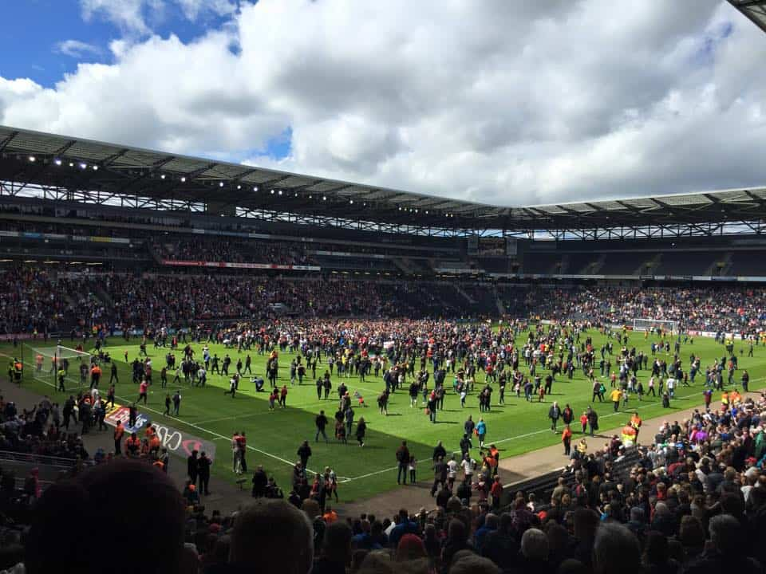
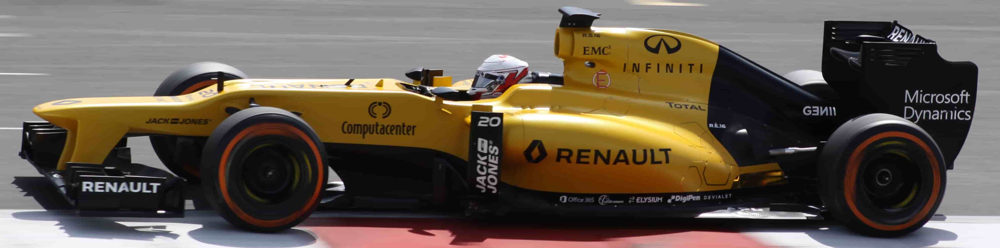
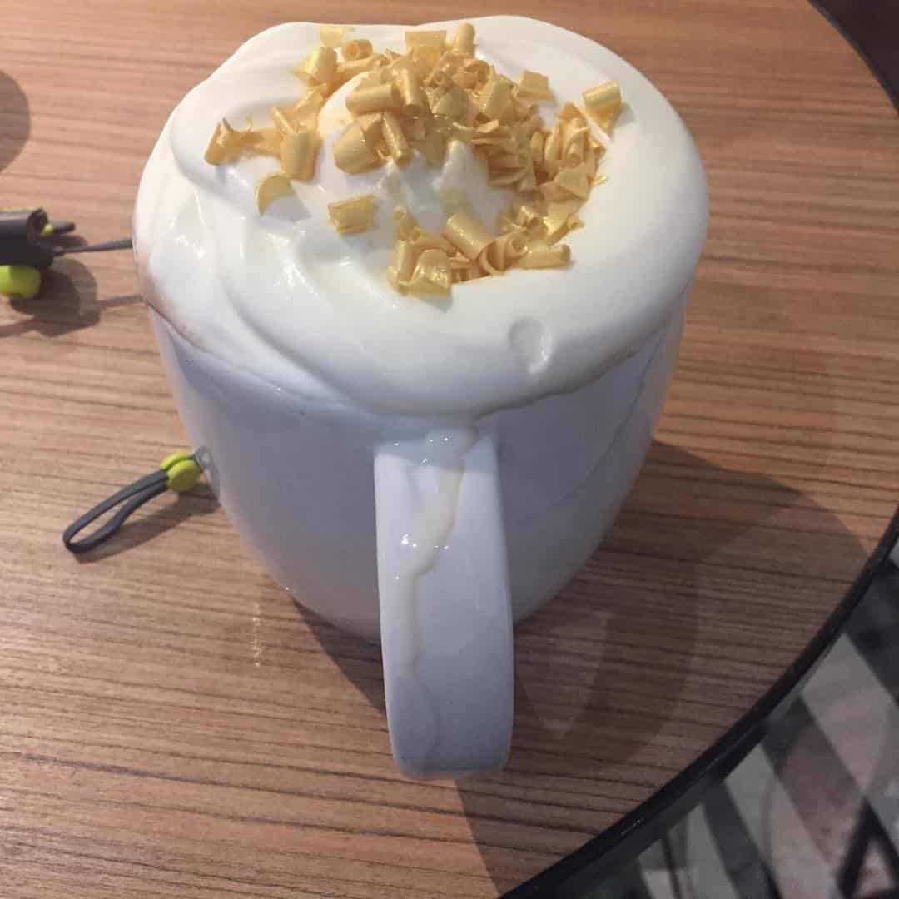

Ryan Labrum-Hill
Ryan Labrum-HillBio
What Makes Me Tick
Sports
Sports is a major part of my life, I love the idea of pushing what is capable to the limit and breaking it. My main favourite sports are Football (or to the USA crowd Soccer) and F1, but I love many other sports like American Football (or to USA crowd Football) with watching many games and watching my first 2 NFL games in 2016 watching my team the New York Giants. Plus, many others sports like Rugby, Tennis and Athlectics. However, I don't really play the sports I just talk about them, but I do love playing even if I'm not that good at them.
Football

Football is Life for me. I spend most of my free time at football grounds mainly Stadium:MK or Stamford Bridge or Wembley Stadium. I Support 2 Teams my childhood team who my dad supported that is Chelsea FC, and my Local team MK Dons. I'm a season ticket holder at the MK Dons and being a fan is difficult just because of history of the creation of the club. However, I Love my clubs and I just love football for everything it entails.
F1 & Motorsport

This is great passion of mine but also an aim of mine to work within a F1 team, this is why I attempted to study Motorsport Engineering but Engineering Mathematics was extremly hard to understand. However, all other parts was great and I love the use of computing in F1, I love using CAD software. Going back to F1, I again support my local team which is Red Bull Racing, I have supported the team since the Stewart GP days back in 1997. I have had many VIP experiences when I was younger and this grew my passion, just love the noise, speed and thrill of motorsport which pushes the boundaries of automotive technology, speed and grip. When you see F1 cars on their edge is amazing. However, when you see an F1 car taking a tight corner at 90mph is amazing when you think that is 20mph over the speedlimit, and most road cars would struggle around the same corner at 60mph. That's what motorsport is all about pushing the limit and breaking it.
Coffee

Coffee or Energy Drinks is what I mainly consume on a day to day routine and spend most of my free time in a Coffee House you may know as Starbucks. My typically order would be a Caramal Mocha or a Caramel Coffee Frapuccino during the warmer time of year. I perfer a strong and sweet taste to my coffee and thats why I always go to Starbucks.
Music
My life is full of music and sound, I love listening to stuff. I always have stuff playing all the time.
My favourite artists are Coldplay, Awolnation, Kasabian, Bastille, Two Door Cinema CLub and many others artists. My favourite genres are Rock, Indie Rock, Alternative Rock, Pop and Electronic. However, in 2016 I have started to listen to Grime and Trap music which for me is bizarre, but shows I willing to try new stuff. In a further update to the site I will be including a Spotify links.
Photography
Photography is key to me but not the Selfie, but mainly more of the landscape and sports variation of photography. I normally upload to my Facebook or Instagarm. I'm normally use my iPhone 6 for general shots or I will use my 2 Canon DSLR's which are a Canon EOS M and a Canon EOS 50D or a small pocket camera at events which is hard to take DSLR's to. I love to experiment with new ways to improve photos. Later on in the site development I would like to have a Photo Gallery of my Photos and embedded API from Instagram to show new photos.